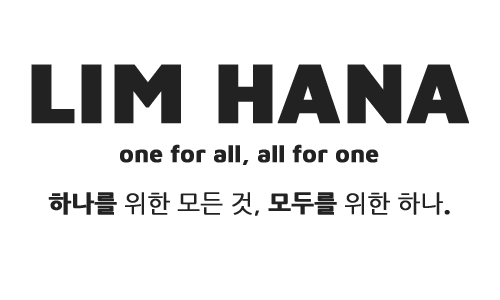

About
- 임하나 (Lim Hana)
- 010.6629.8129
- 1991. 07. 23
- hana1016059@gmail.com
- 경기도 고양시 덕양구
- 한국교통대학교 신소재공학과 졸업
Career & License
- 운전면허 2종 보통
- GTQ 1급
- 컴퓨터 그래픽스 기능사
- 웹디자인 기능사
Skill
- Web Standard
- jQuery
- Adaptive Web
- Photoshop
- Illustrator
Advantage
- 몰입도가 좋은 집중력
- 맡은 일은 꼭 하는 성실함
- 원만하고 밝은 성격

Concept필요한 정보를 한눈에
기존의 아띠울 펜션을 리디자인 하면서 우선적으로 생각한 것은 각 디바이스 환경에 알맞게 필요한 정보를 한 눈에 볼 수 있게 하는 것이었다. 특히 모바일을 중점으로 생각하여 만들었기에 모바일 환경에서 필요한 메뉴를 쉽게 접근 할 수 있게 고려하였다. 메인페이지에는 아띠울 펜션사진과 공지사항, 추천장소를 보여주었고 서브페이지에서는 방정보, 예약, 지도와 같이 꼭 필요로 하는 정보로 구성하였다.
UX & UI대세는 모바일!
요즘엔 어떤 정보이든 PC화면에서 찾기보다는 스마트폰을 이용하여 장소에 상관없이 언제나 사용자가 원할 때에 바로 검색하여 찾는다. 이에 맞게 모바일에서의 접근성을 최대한 고려하여 어플의 느낌이 나도록 제작하였고 바로 전화문의가 가능하도록 연결시켜 놓았다. 또 PC화면 역시 고려하여 반응형웹으로 제작하였으며 밑의 반응형웹과는 다르게 익스플로러 낮은버젼에서도 반응형웹이 작동할 수 있게 JavaScript를 사용하여 구현하였다.
Tone & Manner펜션의 아늑한 느낌
여행가려 하는 장소의 많은 펜션 중에 예약할 곳을 고른다면 안락함과 편안함이 더 느껴지는 펜션을 선호할 것이다. 나 역시도 펜션을 예약할 때에 가격대도 중요하지만 좀더 편안하고 포근한 느낌의 펜션을 선호한다. 이에 맞게 아띠울 펜션의 외관인 나무재질과 이미지 사진들과도 같은 브라운 계열로 전체적인 톤을 설정하여 따듯하고 아늑한 느낌을 주려고 하였다.
Epilogue반응형은 시어머니?
이미 한번의 반응형웹을 제작해 보았지만 여전히 제작하면서 까탈스러운 것이 반응형웹이었다. 어려운 이해도를 요구하는 것도 아니면서 변화하는 부분을 미리 생각하고 염두하여 코딩하여야 하고 각 변화시점마다 설정해 주어야 할 것들이 많았기에 반응형웹을 완전히 내것으로 만들기에는 아직도 많은 노력이 필요함을 다시 한번 느끼게 해주었다.


Concept갓 구운 신선한 빵 파리바게뜨!
처음 반응형웹을 제작하려고 하였을 때에 무언가 먹음직스럽게 보이는 이미지들이 보여 지는 웹페이지를 제작하고 싶었다. 그리하여 어릴 적부터 자주 이용했던 베이커리인 파리바게뜨를 선정하였고 홈페이지 이용 고객의 목적에 맞게 체인점 문의와 제품에 관한 정보, 이벤트 내용을 주축으로 반응형 웹페이지를 구축하였다.
UX & UI디바이스 크기에 맞게
모든 브라우져에서 변화하는 스크린의 크기에 맞춰 다양하게 반응할 수 있도록 미디어쿼리를 사용하여 반응형 웹페이지를 제작하였다. 모바일과 테블릿에서 이용할 때도 편의에 맞게 레이아웃을 구성하였으며 특히 모바일에서는 첫 실행할 때 주소창을 자동으로 숨기도록 하였다. 또 변화하는 시점마다 포인트를 주어 자연스럽게 레이아웃이 바뀌도록 하였다.
Tone & Manner아이덴티티 컬러 BLUE~
파리바게뜨의 고유 아이덴티티 컬러인 블루를 전반적으로 사용하여 배치하였고 화면중앙 메인이미지와 제품검색바는 빵의 느낌이 나도록 브라운을 사용하였다. 텍스트에는 부분적으로 포인트를 주기위해 레드 컬러를 사용하였고 이벤트 배너도 전체적인 색상과 무난하게 어울리도록 노력하였다.
Epilogue반응형은 트랜스포머?
창의 크기에 따라 다양하게 반응하는 반응형 웹은 제이쿼리같이 함수를 이해하고 사용해야 하는 것은 아니지만 각 디바이스의 해상도에 맞게 레이아웃을 구성해야하고 콘텐츠를 배치해야하는 이해도가 많이 요구되는 것을 느끼게 해준 작품이다. 각 변하는 시점마다 콘텐츠를 수정해 주어야 하는 손이 많이 가는 작업이지만 변하는 시점마다 마치 로봇처럼 형태가 변형되는 것이 재밌기도 하였다.


Concept생명감을 불어넣다
아래의 CSS에서 보여진 작품이 정적이라면 이 작품은 jQuery를 통하여 생명감을 불어넣어 정지되어 있는 화면이 동적으로 보여주고자 하였다. 커뮤니티 사이트의 성격을 고려하여 각 콘텐츠들에 알맞게 jQuery 기술을 적용하려고 노력하였고 특히 메인페이지는 몇 부분의 영역을 빼고는 jQuery를 적용하여 움직임의 즐거움을 주려고 노력하였다.
UX & UI사용자의 편리함을 생각하다
입력하는 부분에는 가이드텍스트를 적용하였고, 각 레이아웃마다 툴팁을 적용하여 마우스를 오버할 때 풍선도움말이 뜰 수 있게 하였다. 날씨위젯을 추가함으로써 날씨와 날짜를 쉽게 알 수 있게 하였고 배너부분은 이미지가 자동으로 바뀌어 보이게 하였다. 자유갤러리에 보이는 조그마한 사진들은 클릭 시에 큰 이미지가 보일 수 있게 하였으며 우측 상단에는 이미지슬라이더를 추가하여 여러 장의 모델사진을 클릭하는 위치에 맞추어 움직이게 하였다.
Epilogue.1말하는대로 생각한대로
jQuery는 정말 마법과도 같은 존재이다. CSS코딩으로 구현할 수 없는 것들, 브라우져마다 상이함에 따라 적용이 되지 않기도 하던 부분들, 과도한 브라우져 제어로 인식하여 실행되지 못하게 막아놓아서 구현되지 않는 JavaScript와 같은 부분들이 jQuery를 거치면서 어떤 브라우져에서도 적용되는 것을 보면서 jQuery는 정말 배우고 익혀서 내가 내세울 수 있는 능력으로 키우고 싶다는 생각이 들었다.
Epilogue.2쉬울 듯 쉽지 않은 쉬울 것 같은
가장 적용하기 쉬우면서도 쉽지 않은 것이 jQuery였다. 소스를 구해다 붙여넣기만 하면 쉽게 적용되는 반면에 그것을 온전한 내 것으로 만들기 위해서는 사용된 소스의 내용을 이해해야 하고 내가 적용 하고자 하는 콘텐츠 부분에 더 어울릴 만한 것으로 원래 소스를 수정하거나 응용해서 추가하는 부분들이 결코 쉽지 않기에 앞으로 꾸준히 시간을 투자하여 노력해야 jQuery와 좀 더 가까워지는 날이 올 것 같다.


Concept다양한 콘텐츠를 깔끔하게!
이 작품은 내가 웹코딩을 배우고 있는 대영직업전문학교의 커뮤니티 사이트를 만들어 본 것이다. 커뮤니티 사이트의 성격을 파악하여 콘텐츠를 구성하려고 노력하였고 각 콘텐츠들이 지저분해 보이지 않고 깔끔하게 보여 지도록 하였으며 적절한 위치에 배치하여 콘텐츠에 대한 이해도를 보여주는 것에 중점을 두었다. 또 웹표준을 준수하였고 웹접근성을 고려해 모든 브라우져에서 이용할 수 있도록 하였다.
UX & UI브라우져마다 다르게 보인다? No!
코딩을 하면서 가장 신경 쓰였던 부분은 코딩이 조금만 잘못 되도 각기 다른 브라우져마다 다르게 보인다는 것이었다. 각 브라우져마다 특색이 다르고 민감한 부분이 다른 것을 고려하여 레이아웃이 적절하게 배치되도록 코딩하려 하였고, clearfix를 활용하여 그 부분에 민감한 브라우져에서 레이아웃이 무너지는 현상이 없도록 하였다. 또 웹표준에 준수할 수 있도록 W3C에서 유효성검사를 통과하였다.
Tone & Manner눈에 편안함을 주는 GREEN
항상 컴퓨터 앞에 앉아 작업하는 시간이 많기에 커뮤니티 사이트에 접속하였을 때라도 눈에 편안함을 줄 수 있도록 그린컬러를 사용하였다. 여러 가지 색상을 사용하지 않고 대부분 그린컬러계열 위주로 사용함으로 전체적인 톤에 통일감을 주었고 부분 부분에 orange, brown컬러를 적절히 사용하여 너무 단조롭지 않게 하였다.
EpilogueHTML = div?
간단한 예제로만 배우던 코딩을 내손으로 차근차근 코딩해가며 만들어간 첫 작품이다. HTML의 전부라 하여도 과언이 아닐 div 코딩을 통하여 작품을 완성했을땐 아직 미숙하기만 실력이 조금은 향상된 것 같은 기분이 들었다. 또 웹접근성을 고려하여 다른 브라우져 테스트를 마치고 마지막으로 익스플로러 7에서 테스트 하였을 때 부분적으로 레이아웃이 무너진 것을 보고 수정하면서 사소해 보이는 하나까지도 염두에 두고 코딩해야 한다는 것을 배울 수 있었다.